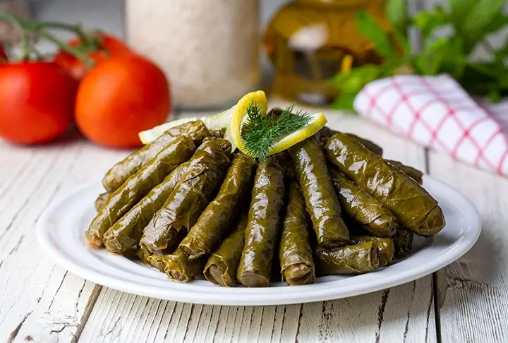

Sarma

Açıklama
Bayram yemeklerinden altın günlerine kadar günün her anı yenilebilecek, en sevilen, en zamansız yemek tariflerinden biridir zeytinyağlı yaprak sarma. Belli başlı püf noktaları ve lezzet sırlarını takip edip, biraz zaman ayırdıktan sonra harika sarmalar hazırlayabilirsiniz. İncecik sarılan, bol zeytinyağlı ve limonlu olanı makbuldür yaprak sarmanın. İsterseniz salamura asma yaprağı kullanarak isterseniz de taze asma yaprağı kullanarak hazırlayabilirsiniz onu. Karşınızda yemelere doyamayacağınız zeytinyağlı yaprak sarma tarifi!
Malzemeler
- pirinç
- asma yaprağı
- soğan
- zeytinyağı
Yapılışı
- İlk önce salamura yapraklar 2-3 dakika sıcak suda bekletilir, yıkanır ve süzgece alınır.
- Daha sonra geniş bir kabın içerisine soğanlar rendelenir.
- Üzerine zeytinyağı dökülür.
- Pirinç yıkanarak kabın içerisine eklenir.
- Baharatlar, salça ve tuzu da ilave edildikten sonra ince kıyılmış maydanozu da eklenerek karıştırılır (çiğ bir iç harç olacak)
- Yaprağın geniş kısmına iç harçtan konulur ve rulo gibi iki yanlardan kapatarak sarılır.
- Bu işleme yaprak bitene kadar devam edilir.
- Sardığımız yaprakların üzerine zeytinyağı ve limon dilimleri eklenir.
- Sarmaların üzerine hafif çıkana kadar da sıcak su ilave edilerek kısık ateşte pişirilir.(üzerine sarmalar dağılmasın diye tencere kapağından biraz küçük ebatta bir tabak kapatabilirsiniz.)